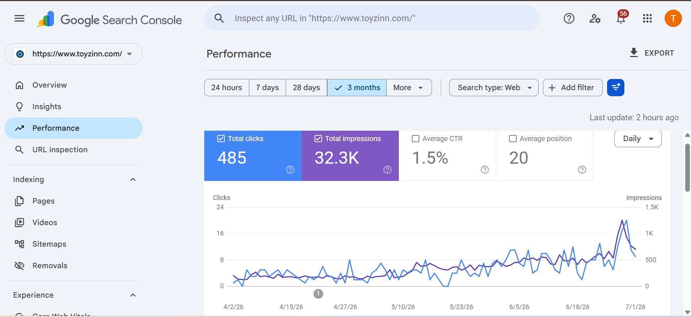

Professional Experience
Leading end to end SEO execution for prominent regional brands, specializing in the Middle East e-commerce sector. Directly responsible for technical auditing, on-page structures, and advanced search performance analytics, contributed to organic sales from the AED 0 to AED 1000+
Spearheaded technical and strategic SEO initiatives focusing on high end niches, including commercial and residential interior design websites based in Dubai. Developed comprehensive content roadmaps and managed advanced link indexing strategies for competitive real estate and design markets.
Contributed to strategic media operations, digital content analysis, and public relations workflows within a fast paced communications environment.
Assisted with policy research, legislative documentation, and strategic administrative analysis during an intensive parliamentary attachment. Attended the sessions of the Senate and the Ntional Assembly and gained the real life experience of Policy making from the market experts.
Featured SEO Projects

Toyzinn: High End Children's Products
Executing a comprehensive SEO turnaround strategy targeting the competitive GCC region. Managing technical crawl budgets, strategic keyword mapping, semantic HTML improvements, and metadata architectures to systematically boost organic product visibility.

ToysUAE: Targeted Blog & Content Authority
Developed and authored highly targeted, high intent blog content designed to build topical authority within the children's toys and e-commerce niche. Content was optimized for semantic search and designed to capture informational long tail keywords.